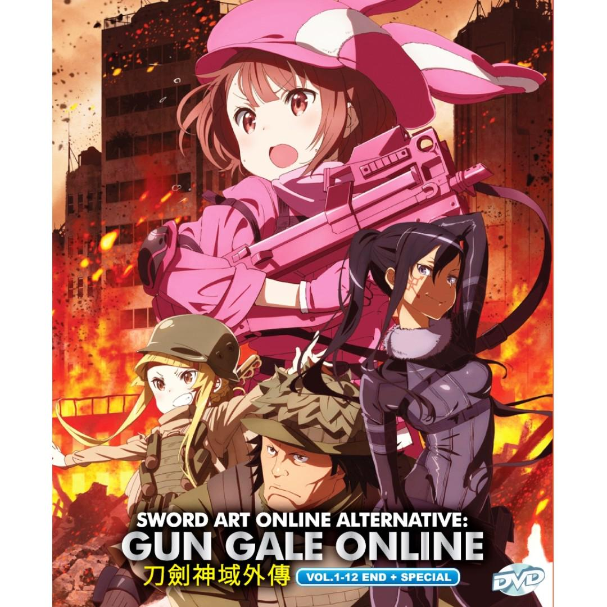
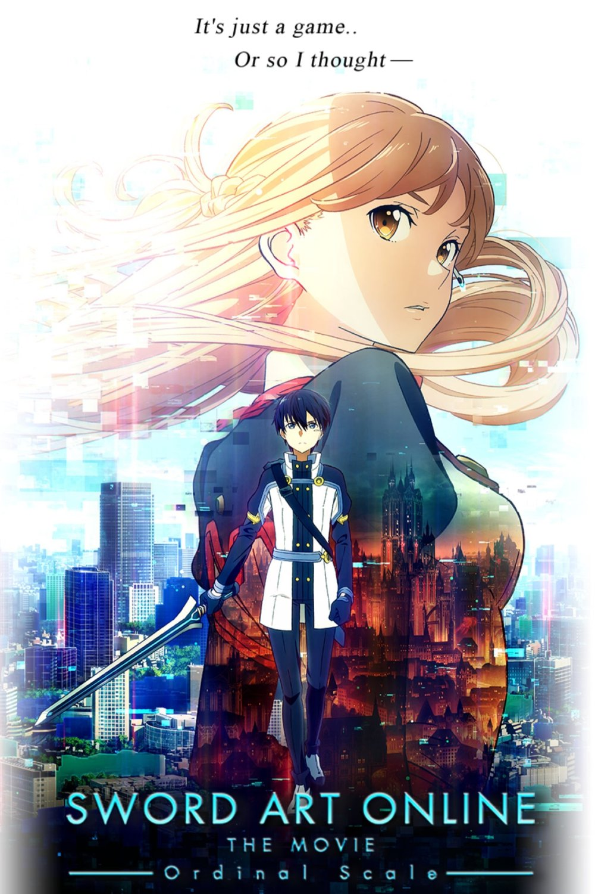
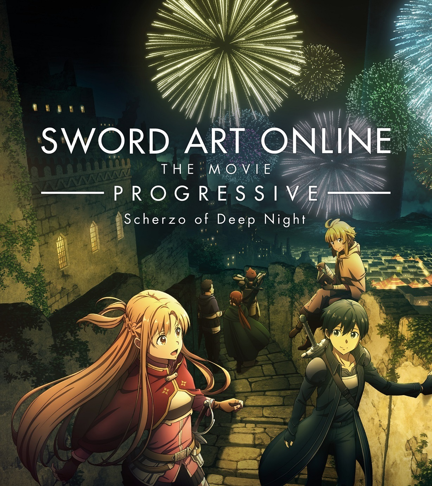

Due to the incident that occurred in VR MMORPG Sword Art Online—where 10,000 players were trapped in the game on launch day—the popularity of VR games has plummeted due to fear of similar incidents. The NerveGear, SAO's VR device, was recalled and destroyed, but with the launch of its successor, the AmuSphere, combined with release of the license-free development support package the "Seed", the popularity of VR games saw a sudden resurgence. The story follows Karen Kohiruimaki, a university student with a complex about her abnormal height. She begins playing a VR game called Gun Gale Online after it gives her the short, cute avatar that she has always wanted.

Sword Art Online the Movie: Ordinal Scale
In the year 2026, the Augma is released to the public as an alternative system to the AmuSphere, as it projects a game layer on top of reality while the player is conscious, rather than using FullDive. The most prominent combat-based game is Ordinal Scale, in which a player's abilities are ranked by ordinal numbers. Asuna, Lisbeth and Silica encourage Kirito to play OS upon hearing that Aincrad bosses have appeared. Kirito joins Asuna and Klein in a boss fight against Kagachi the Samurai Lord at Akihabara, where the game's mascot, appears and gives players buff effects as she sings. Kirito fails to achieve anything due to lack of real world physical strength and agility. Eiji aids the group in defeating the boss. Before Asuna makes the killing blow, Eiji whispers the word "Switch", a game mechanic from SAO that she recognizes. The next night, Asuna joins Klein and his group for another boss fight at Yoyogi Park while waiting for their last group member, unaware that he was injured by Eiji the night before. Asuna leaves Klein and his guild behind and proceeds to the fight against the Storm Griffin. Klein and his guild are surprised by the sudden appearance of a second boss, Zanghi the Flame Caller, and shockingly supported by Eiji, who physically attacks and defeats Klein and his entire guild in the real world using superior reflexes and seemingly superhuman strength. When Asuna returns to where she left them, Klein and his guild are nowhere to be seen. The following morning, as Kirito practices with OS in Yoyogi Park, a girl he doesn't know appears in a white hood, mouths something wordlessly and points off into the distance before disappearing. A confused Kirito is surprised by Asuna who has arrived to have lunch with him. While eating together, Asuna theorizes that Eiji was a former member of the Knights of the Blood Oath named Nautilus, while Yui deduces that the spawn locations of the Aincrad bosses line up with the SAO dungeon maps. Noting the absence of Klein, Kirito tries to check up on him. Asuna, Lisbeth and Silica join the boss fight against Strict Hermit at Yebisu Garden Place, where Yuna and Eiji appear again. At the same time, Agil contacts Kirito and tells him that Klein has been hospitalized with a broken arm; Kirito, rushes to protect Asuna and their friends. During the boss battle, a second boss, Dorz'l the Chaos Drake, suddenly appears and fixates on Silica. Eiji blocks Silica's escape by pushing her into the path of a lethal boss attack, and Asuna is defeated while protecting her; an orange orb materializes from Asuna and is quickly collected by one of the OS drones. After the battle, Asuna begins to suffer memory loss, and goes to the hospital for examination. Asuna learns that the Augma device scanned her brain specifically for SAO memories and that the memory loss could worsen. After Asuna's condition worsens, Kirito gains a strong resolve to solve the mystery. Kirito visits Klein in the hospital and confirms that Klein's SAO memories are also missing. Kirito goes to the Dire Tusk boss battle at Tokyo Dome City looking for Eiji, where he is joined by Sinon; although he is concerned for her safety, Sinon reminds Kirito that she is not an SAO survivor. During the boss battle, an SAO survivor is defeated and Kirito witnesses a glowing memory orb being collected by an OS drone. Yui tries to retrieve the memory orb from the drone but fails after being blocked by the OS system. After the battle, Kirito is frustrated that Eiji did not show up, but meets the hooded girl a third time, who repeats her actions from before. Kirito and Yui figure out that she is pointing towards Touto Technical University. Kirito goes to the university and meets Professor Tetsuhiro Shigemura, who developed Augma. Shigemura refuses to answer any questions. Before leaving, Kirito notices on Shigemura's desk a picture of a girl who resembles Yuna. Kirito talks to Seijirō Kikuoka, who informs him that Shigemura's daughter, Yuna, died in SAO. Kirito warns Kikuoka that the memory loss may be affecting other SAO survivors playing OS. Visiting Asuna's home, Kirito promises Asuna that he will get her memories back. While searching for clues, Kirito encounters the hooded girl yet again, who he confirms is Yuna. When she tells him his rank is too low, Kirito decides to level up hardcore, recklessly chain-soloing as many bosses as he can, and improving his AR swordwork with help from his sister, Leafa. Days later, the OS players gather at the Tokyo National Stadium for Yuna's first live concert. In the lower levels, Kirito duels with Eiji, who claims he has a way to return Asuna's memories. After Kirito defeats him, Eiji reveals that Shigemura has been harvesting memories of SAO players in an attempt to reconstruct his lost daughter's soul and resurrect her as an AI; having SAO survivors concentrated in one place is the final stage of the plan and Eiji believes he has won. Kirito rushes back upstairs to warn everyone, calling Kikuoka on the way. Kikuoka warns Kirito that all the memory harvesting drones scanning everyone at once could damage the players' brains, killing them like the NerveGear did in SAO. As a horde of Aincrad bosses appear and terrorize the stadium, Kirito and Yuna join the battle. Yuna tells Kirito that the Augma has a hidden full-dive feature and he can use it to defeat SAO's 100th floor boss to stop the scan and save everyone. Before diving, Kirito gives Asuna a promise ring. Entering the Ruby Palace of Floor 100, Kirito, Lisbeth, Silica, Agil, and Sinon confront the boss. They are easily overwhelmed until Asuna, Leafa, Klein, and several other memorable players from ALO and GGO come to their aid. Yui restores their saved abilities from SAO, allowing everyone to defeat the boss. The voice of Akihiko Kayaba congratulates them on their victory and gives Kirito an extremely powerful sword as a reward. The group returns to the arena still in full-dive where Kirito effortlessly dispatches the bosses with his new sword. Meanwhile, in the real world, Kikuoka finds Shigemura in the abandoned server room of Argue and arrests him. The hooded Yuna restores the survivors' memories and fades out of existence since her existence was tied to that of the Floor 100 boss. Afterwards, Kirito and Asuna fulfill the promise they made to each other in Aincrad, to watch a meteor shower together. Asuna returns Kirito's promise ring, allowing him to properly place it on her finger.

Sword Art Online Progressive: Scherzo of Deep Night
In December 2022, the two lead guilds ALS and DKB, along with a few other players, defeat the 4th floor boss. The two guilds are somewhat at odds with each other over how to complete the game. After, main characters Asuna and Kirito along with side character Argo discuss a New Year's party planned by the two guilds. Asuna and Kirito go into the dungeon below the 5th floor's main town, where Asuna overhears two other players have conceived a plan to destroy the two guilds; the plan includes the guild ALS walking out of the party to kill the 5th floor raid boss, where it had otherwise been a joint effort. Kirito and Asuna later discuss the negative impact that ALS killing the raid boss would have on the effort to finish the game and then confront the leader of ALS, Kibaou, who acknowledges the plan's existence. He reasons that the 5th floor boss has a powerful item that would give his guild the advantage in clearing the floors, but that he was forced into the plan by a faction within his guild. He gives a mixed blessing to Kirito, Asuna, and any other group who attempts and succeeds in killing the raid boss before his guild attempts to kill it. Kirito and Asuna gather a few members for their raid but fail to recruit Mito who is still disappointed by her actions in the previous film. Kirito, Asuna, and their raid group enter the dungeon and kill the monsters on the way to the raid boss. They discuss strategy before sending Kirito and Argo to scout the raid boss' room, only to start the fight by accident. The fight initially involves the boss' arms and legs attacking the players when the players step on lines on the ground. Shortly, the rest of the raid joins the group but set off the same attacks unwittingly. They eventually do enough damage to the raid boss where it exposes a crest, known to be a weakness, before the head hides itself. When the group attempts to retreat, the head comes out of the ground and seizes Asuna, who is freed by the surprise appearance of Mito. Then the crest begins appearing at random locations on the arms and legs of the raid boss; after a number of attacks on the crest, the raid boss materializes as a golem with the crest on his face. They subsequently destroy the golem and retrieve the rare item. While the rest of their party leaves to the 6th floor, Asuna and Kirito confront the now-arrived guild ALS. Kirito provides two conditions for providing the item, neither of which the guild then agrees to, but otherwise the guild peacefully departs. Later, on New Year's Eve on the 5th floor, Kirito and Asuna are ambushed by another player. They briefly scuffle and then the unnamed player disappears, wherein Kirito and Asuna realize the existence of a group or guild dedicated to killing other players. The film concludes with the two enjoying fireworks.

Sword Art Online Progressive: Aria of a Starless Night
In 2022, Akihiko Kayaba creates a virtual reality massively multiplayer online role-playing game named Sword Art Online As depicted in the first volume of the Sword Art Online: Progressive light novel series, the NerveGear is a 2nd generation FullDive device developed by a company named Argus, with Kayaba as its creator. It has a single interface that covers the player's entire head. It controls the player's consciousness by redirecting the brain's signals to the NerveGear, such that they can experience and control their in-game characters with their minds without any physical movement. It has its own battery source, as well as a high-frequency electromagnetic microwave transmitter. On November 6, 2022, 10,000 players log into SAO for the first time, only to discover that they are unable to log out of the game. Kayaba reveals himself to tell the players that they must beat all 100 floors of Aincrad, the enormous steel castle that is the setting of SAO if they want to escape the game. Only then would they be able to log out. Dying inside of the game or having their NerveGear forcibly removed from their head will cause them to have their brains destroyed by the NerveGear, thus killing them in real life as well. Asuna, who had logged into the game to play with her school friend Misumi Tozawa, or Mito within the game, initially struggles to cope with her new reality of being trapped inside the game. Having been an original beta tester, Mito uses her previous experience to help Asuna level up quickly by killing monsters far outside the start town where the non-beta players would be unaware of, and the two form a party. A few weeks later, Asuna and Mito head off to kill nepenthes, a plant-based monster located in a mountainous terrain of the floor. Mito warns Asuna that killing the nepenthes with a ball over its head will cause it to spew out smoke and trigger a massive assault of nearby plants, and to avoid it at all cost. During battle, Mito leaves to capture a rare sly shrewman and during that time Asuna unknowingly kills the nepenthes with the overhead ball, triggering an onslaught of them. Mito attempts to save Asuna but is forced over a cliff by the plants and is unable to reach her as the nepenthes begin travelling down the mountain to attack her. Watching Asuna's health bar fall down to dangerous levels, Mito panics and leaves their newly formed party. Asuna receives the disbanded party notice just in time to get attacked by an even more dangerous monster after killing all the nepenthes. Before she is killed, Kirito arrives and eliminates the monster. He offers her healing potions and a map back to the nearest town before abruptly leaving. On the morning of November 27, 2022, Asuna wakes up alone in her lodge room and declares that if she is to die in this new world, she will go out in her own way. She purchases a cloak and spends the next three days killing monsters inside a cave. Kirito enters the cave and insists that she go to the nearest town and recuperate her health before she is killed, to which she refuses and suddenly collapses from exhaustion. She awakens outside of it, having been dragged out by Kirito, who requests that she join him in town for a group meeting on preparation for defeating the first floor boss. The two arrive in town and attend the meeting organized by the player Diabel, who announces to the attendants that they will all form multiple sets of parties and strategize in order to defeat the floor boss, Illfang the Kobold Lord, tomorrow morning. Asuna notices that Mito is one of the players in attendance but fails to interact with her as she feels betrayed because she left her to die. Later that night, Kirito gives Asuna a new sword and the two practice their fighting strategy. During this, Asuna asks Kirito if beta testers are bad people as she explains to him that she was deserted by one as she was just about to die. Kirito goes on to explain that he had a previous similar experience and feels that she was simply scared to lose her own life and chose to save herself in the moment, which gives Asuna some relief on the matter. The next day, Kirito, Asuna, Mito, Diabel and the remaining group of party members arrive at the boss room and battle Illfang and his minion sentinels. When Illfang's health becomes low, Diabel goes for the finishing attack, but before he can see Illfang's true weapon, he is mortally wounded by its onslaught. With his dying breath, Diabel tells Kirito to defeat the boss and save the players at all costs. With the assistance of Asuna and Mito, Kirito successfully defeats Illfang, but after the victory, the other players immediately accuse Kirito of letting Diabel die by having previous knowledge about Illfang he did not share with the players and they proceed to label him a "beater", a combination of the words "beta-tester" and "cheater". Kirito accepts this title and claims the prize for defeating Illfang: a black leather trench coat. He then becomes the first player to clear the first floor by stepping through the gate. After discovering the cloaked girl with Kirito was actually Asuna, Mito apologizes to her for what happened back in the mountains and offers to form a party with her again. Asuna declines the offer, believing that she has found her own path forward within this world and that it involves Kirito. The two depart as Asuna joins Kirito on the second floor and the two formally exchange their names with each other. As the two head off to activate the second floor teleporter, a mysterious girl can be seen hiding behind the floor gate, apparently eager that the two current strongest players have joined forces.